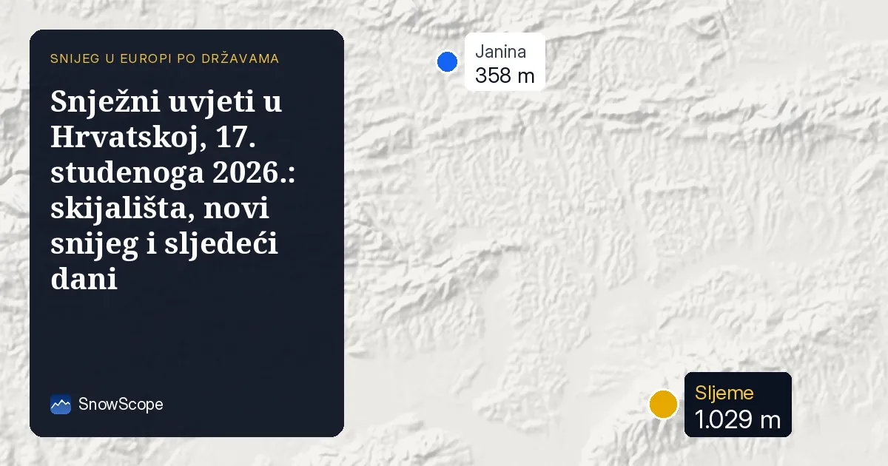

Snježni uvjeti u Hrvatskoj, 17. studenoga 2026.: skijališta, novi snijeg i sljedeći dani
Snježni pokrivač u Hrvatskoj zauzima oko 10 km² (utorak, 17. studenoga). To je 870 km² manje nego jučer.
Pogledajte prognozu snijega za Sljeme u aplikaciji SnowScopeVisina snijega, upozorenja i 3D karta, besplatno.
Snježni pokrivač danas
To je blizu 10 km² od prije sedam dana. Nijedan visinski pojas još nije pretežno bijel.
| Skijalište | Visina snijega | Novi snijeg, 72 h | Sljedeći dani | Vrh |
|---|---|---|---|---|
| Sljeme | 1 cm | 0 cm | 0 cm | 1.029 m |

Gdje je pao novi snijeg
Posljednja tri dana gotovo nije padao snijeg: maksimum je 0 cm.
Što to znači na stazama
Otopljenje topi pokrivač: ujutro tvrd snijeg, poslijepodne mokar.
Sljedeći dani
U sljedeća tri dana očekuje se do 0 cm, a za cijeli tjedan do 9 cm.
Najsnježniji dan: ponedjeljak, 23. studenoga, do 5 cm.
Najbolja skijališta trenutno
Najviše snijega na gornjim stazama: Sljeme, 1 cm.
Ski-centri sa snijegom na gornjim stazama: 1 od 4.
Savjeti za skijaše
- Prije skijanja izvan staza pročitajte lokalni lavinski bilten.
- Prije polaska provjerite rade li liftovi.
About these numbers
Resort snow depths are the deepest snow on the resort's upper slopes from the SnowScope snow model (about 1 km, run of 17. studenoga); they are estimates for an area, not a measurement at one point. Station values are measurements on the date shown. Forecasts can change. Always read the official avalanche bulletin before going off-piste.
Cite this report
For research, teaching or the press: the numbers and charts are free to reuse under CC BY 4.0 with this citation.
SnowScope (2026), Snježni uvjeti u Hrvatskoj, 17. studenoga 2026.: skijališta, novi snijeg i sljedeći dani, https://snowscope.app/blog/hr/2026/11/croatia-snow-report-17-november-2026.html, accessed 2026-11-17
SnowScope (Atlas Labs). (2026, November 17). Snježni uvjeti u Hrvatskoj, 17. studenoga 2026.: skijališta, novi snijeg i sljedeći dani. SnowScope snow reports. https://snowscope.app/blog/hr/2026/11/croatia-snow-report-17-november-2026.html
BibTeX
@misc{snowscope2026croatiasnowreport17novem,
author = {{SnowScope (Atlas Labs)}},
title = {Snježni uvjeti u Hrvatskoj, 17. studenoga 2026.: skijališta, novi snijeg i sljedeći dani},
year = {2026},
month = nov,
howpublished = {\url{https://snowscope.app/blog/hr/2026/11/croatia-snow-report-17-november-2026.html}},
note = {Published 2026-11-17 13:32 UTC; accessed 2026-11-17}
}· CC BY 4.0 · Methods, data and tools →
Sljeme: snow and temperature by height, this winter vs last (tools) →
Follow Sljeme
Besplatno: poruka kada dolazi novi snijeg i prognoza svako jutro.